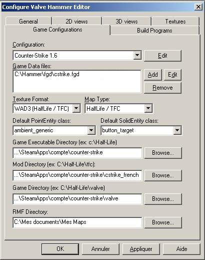

Dans ce tutoriel (annexe non-officiel au tutoriel officiel de mapping HL1 du SdZ) vous allez apprendre à utiliser et à configurer votre Valve Hammer Editor pour les jeux sur la plateforme Steam !
De nos jours Steam est plus populaire que jamais et c'est assez rare que l'on doive ré-installer nos vieux jeux de Valve avec le CD-ROM. On préfère les installer directement via Steam. De toute façon, la structure des fichiers qui est montrée dans le cours officiel de mapping HL1 est assez ancienne et si vous avez une version CD-ROM récente du jeu Counter-Strike 1.6, par exemple, alors vous risquez de ne jamais voir ce type de structure de répertoire. Donc, place à la configuration pour Steam !
Nous allons premièrement télécharger Valve Hammer Editor. Nous allons prendre la version 3.4 de Hammer, mais notez que la version 3.5 bêta est également disponible, mais qu'elle doit être installée après la version 3.4. La version 3.5 bêta vous offre des nouveautés très intéressantes : le fait de voir les leaks dans votre map en fenêtre 3D, et de voir les models que vous insérez dans votre map. Plus quelques autres fonctionnalités utiles. Mais la version 3.4 doit être installée également vu qu'elle a un avantage que la v.3.5 n'a pas ! Elle crée des répertoires (sprites, models, fgd, ...), cela permet d'avoir du contenu au départ. Vous allez d'ailleurs voir que nous nous servirons des FGD de base fournis avec Hammer v.3.4 très bientôt !
Hammer v3.4.exe (2.04 Mo) Il s'installe en créant des répertoires et des fichiers utiles. [ Miroir #1 | Miroir #2 ]
Hammer v3.5.exe (598 Ko) On doit copier l'exécutable dans le répertoire de Hammer. Il permet de voir, entre autres, les erreurs de leak et les models dans la vue 3D [ Miroir #1 | Miroir #2 ]
ZHLT - Compilateurs
Nous allons aussi télécharger les ZHLT (abréviation de Zoner Half-Life Tools).Ce sont des compilateurs améliorés : ils vous permettent de compiler votre map en fichier *.bsp, ce sont ces fichiers qui rendent vie à la map, ce sont les seuls fichiers que les serveurs peuvent lire. Téléchargez-le : nous en aurons besoin pour configurer Hammer.
Si vous avez Firefox, les fichiers ont été sauvegardés par défaut dans le dossier Mes documents\Mes téléchargements. Une fois trouvé, exécutez Hammer !
Installez-le, et de préférence avec un chemin de dossier très court, comme C:\Hammer. Maintenant que Hammer Editor est installé, l'idéal serait de dé-zipper le ZHLT (zhlt34x86final.zip) dans un sous-dossier de votre répertoire Hammer, comme C:\Hammer\ZHLT\.
FGD - Fichier descriptif du mod
Ici ! Vous allez télécharger le fichier .fgd du mod counter-strike mis à jour, pour que l'on puisse mapper. Le FGD de Counter-Strike inclus dans Hammer est trop vieux et mieux vaut prendre le plus récent (2002 au lieu de 2001). Si vous voulez mapper pour un autre mod que CS, regardez plus bas...
Voici le FGD de Counter-Strike le récent et stable :
FGD Counter-Strike (164 Ko) Excellent pour le mapping CS 1.6 et CS:CZ (inclus les sprites d'entités) [ Miroir #1 | Miroir #2 ]
Pour ce qui est des autres mods, il faut se rendre dans le répertoire de Hammer. C:\Program Files\Valve Hammer Editor\fgd\ Puis le FGD de votre jeu se trouvera ici ! Que se soit du HL1, DOD, TFC ! Pour des mods customs comme SevenCoop, Vampire Slayer, Action Half-Life ou Natural Selection, visitez la section Téléchargements FGD pour HL1 du forum de Mapping-Area.
Une fois votre bon FGD choisi, dé-zippez-le dans le sous-dossier de Hammer : C:\Hammer\fgd\.
Batch Compiler - Logiciel de compilation
Si vous préférez compiler avec un autre programme que Hammer et avoir énormément de paramètres pour la compilation de votre map (ce que je vous recommande fortement). Il ne reste plus qu'à télécharger Batch Compiler qui vous servira à compiler.
Nous pouvons maintenant démarrer Valve Hammer Editor. La première fois que vous l'ouvrez, il vous demande de le configurer. Répondez "Yes" pour ouvrir la fenêtre de configuration. Vous pourrez revenir à cette fenêtre en passant par le menu Tools > Options.
Game Configurations
Dans le premier onglet "Game configurations", cliquez sur le bouton "Edit" tout en haut (pour indiquer pour quel mod vous voulez mapper). Cliquez sur "Add" dans la fenêtre qui vient de s'ouvrir, et donnez un nom à votre nouvelle configuration (le nom du mod). Commencez par Counter-Strike. Entrez "Counter-Strike", puis faites "Close".
De retour dans la première fenêtre, cliquez sur le Bouton "Add" de "Game data Files", puis indiquez où se trouve le fichier FGD du mod. Prenez en note l'exemple qui correspond à celui que vous avez téléchargé auparavant. De manière que vous soyez apte à trouver le bon titre de fichier pour le mod pour lequel vous mappez :
cs_expert-tom793c.fgd pour le fgd de Counter-Strike 1.6 (version mise à jour)
cstrike.fgd pour le fgd de Counter-Strike 1.6 (inclus avec Hammer v.3.4)
halflife.fgd pour le fgd de Half-Life et autres mods tiers (inclus avec Hammer v.3.4)
halflife-DOD2-expert.fgd pour le fgd de Day of Defeat (inclus avec Hammer v.3.4)
tf15f.fgd pour le fgd de Team Fortress Classic (inclus avec Hammer v.3.4)
Hammer devrait alors lire les informations du FGD, et afficher quelques informations supplémentaires.
Il nous reste encore 4 lignes à remplir :
Game executable directory : insérer le chemin de votre répertoire principal de votre mod. Exemples : CS 1.6 : C:\Program Files\Steam\steamapps\votre_compte_steam\counter-strike\ CS: CZ : C:\Program Files\Steam\steamapps\votre_compte_steam\condition zero\ HL 1 : C:\Program Files\Steam\steamapps\votre_compte_steam\half-life\ DOD : C:\Program Files\Steam\steamapps\votre_compte_steam\day of defeat\ TFC : C:\Program Files\Steam\steamapps\votre_compte_steam eam fortress classic\
Mod directory : c'est le répertoire où est installé le mod. Exemples : CS 1.6 : C:\Program Files\Steam\steamapps\votre_compte_steam\counter-strike\cstrike_french\ CS: CZ : C:\Program Files\Steam\steamapps\votre_compte_steam\condition zero\czero_french\ HL 1 : C:\Program Files\Steam\steamapps\votre_compte_steam\half-life\valve_french DOD : C:\Program Files\Steam\steamapps\votre_compte_steam\day of defeat\dod_french\ TFC : C:\Program Files\Steam\steamapps\votre_compte_steam eam fortress classic fc_french\
Game directory : il correspond au dossier de valve. Exemples : CS 1.6 : C:\Program Files\Steam\steamapps\votre_compte_steam\counter-strike\valve\ CS: CZ : C:\Program Files\Steam\steamapps\votre_compte_steam\condition zero\valve\ HL 1 : C:\Program Files\Steam\steamapps\votre_compte_steam\half-life\valve\ DOD : C:\Program Files\Steam\steamapps\votre_compte_steam\day of defeat\valve\ TFC : C:\Program Files\Steam\steamapps\votre_compte_steam eam fortress classic\valve\
RMF Directory : c'est le répertoire où vous stockez vos maps en cours de fabrication. Moi, j'ai un dossier Maps dans Mes Documents. Créez-vous un dossier où vous voulez, tant que c'est facile d'accès. :)
Répétez ces opérations depuis le début pour chaque mod qui vous intéresse. Voici ce que ça donne pour Counter Strike :

Build Programs
Allons-y de haut en bas. Vous pourrez répéter cette manoeuvre pour tous les autres mods que vous désirez mapper sur Hammer. Mais d'abord un gros avertissement !
Game executable : c'est l'exécutable du mod. Son nom est "hl.exe", et vous le trouverez dans le répertoire où vous avez installé Counter-Strike (C:\Program Files\Steam\SteamApps\votre_compte_steam\counter-strike\hl.exe par exemple).
CSG Executable : c'est un des 4 compilateurs nécessaires pour créer un fichier BSP (une map compilée). Vous le trouverez dans le répertoire où vous avez installé les ZHLT. Son nom est "hlcsg.exe".
BSP Executable : un autre compilateur. Son nom est "hlbsp.exe".
VIS Executable : le troisième compilateur, "hlvis.exe".
RAD Executable : le dernier compilateur, "hlrad.exe"
Place compiled maps in this directory before running the game : c'est le répertoire des maps du mod que vous devez indiquer.
Dans cet onglet, vous pouvez insérer les fichiers .wad que vous retrouvez dans les dossiers du jeu dans lesquels vous mappez et sur Internet. Comme par exemple www.mapping-area.com ou CGTextures.com.
Les textures sont enregistrées dans des fichiers à l'extension .wad. Vous devez donc indiquer quelques WAD à Hammer pour qu'il vous propose un choix de textures lorsque vous ferez votre map.
Pour insérer de nouveaux wads, faites "Add WAD", puis allez chercher, par exemple, des wads fournis avec le mod pour lequel vous mappez. Pour les trouver, allez dans votre répertoire de votre jeu d'origine (pas celui de Steam, le répertoire qui a été créé lors de l'installation du jeu avec les CDs).
Pour Condition Zero, c'est le répertoire : C:\Valve\Condition Zero ou C:\Program Files\Half-Life.
Pour Counter-Strike, c'est le répertoire : C:\Sierra\Half-Life ou C:\Program Files\Half-Life.
Vous pouvez donc insérer les wads suivants :
celui de Half-Life : halflife.wad (répertoire : Valve\half-life.wad)
celui des textures "decals" : decals.wad (répertoire : Valve\decals.wad)
celui de Counter-Strike : cstrike.wad (répertoire : cstrike\cstrike.wad)
celui de Condition Zero : czritual_standard.wad (répertoire : czero\czritual_standard.wad).
et ceux de chaque maps officielles (exemple : cstrike\de_dust2.wad).
Steam cache également les WADs officiels...
Si vous n'avez pas installé votre jeu d'origine, vous n'aurez pas accès aux wads officiels.
Vous devez donc chercher ces fichiers wads dans le répertoire d'installation de Steam. C:\Program Files\Steam\SteamApps
half-life.gcf
counter-strike.gcf
condition zero.gcf
counter-strike source shared.gcf
Pour ouvrir ces fichiers .gcf vous devez utiliser le programme GCFscape :
Si vous avez des erreurs à l'ouverture du programme, assurez-vous d'avoir téléchargé une version récente du .NET Framework de Microsoft et d'être à jour dans vos mises à jour Windows surtout en ce qui concerne Microsoft Visual C++.
Maintenant, vous savez configurer votre Valve Hammer Editor pour mapper avec Steam.
Des parties de ce tutoriel sont tirées du tutoriel Installation et configuration du tutoriel monstre Une map avec Hammer ! de M@teo21. Le but n'étant pas de vous réapprendre à utiliser Hammer mais seulement faire un complément au tutoriel de M@teo21 qui selon moi était un oubli flagrant pour l'utilisation qu'est Steam de nos jours ! Donc merci à lui, et à vous pour votre visite ;)
SI VOUS TROUVEZ UNE QUELCONQUE ERREUR, MERCI DE M'EN FAIRE PART VIA MESSAGE PRIVE OU COMMENTAIRE AU TUTORIEL. POUR TOUS PROBLEMES EN RAPPORT AVEC VALVE HAMMER EDITOR REFEREZ VOUS AU FORUM ET NON A LA SECTION COMMENTAIRES DE CE TUTORIEL. MERCI.